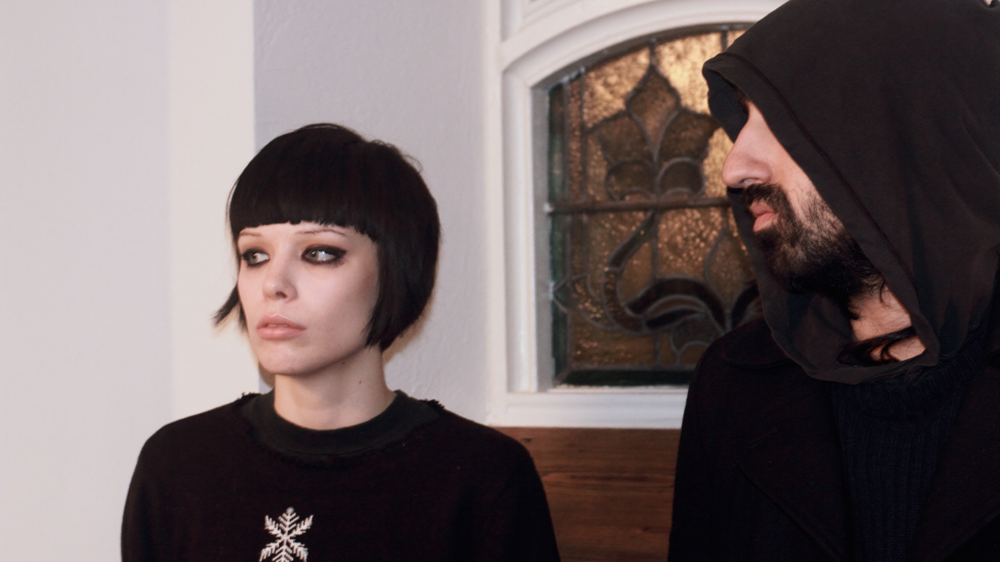
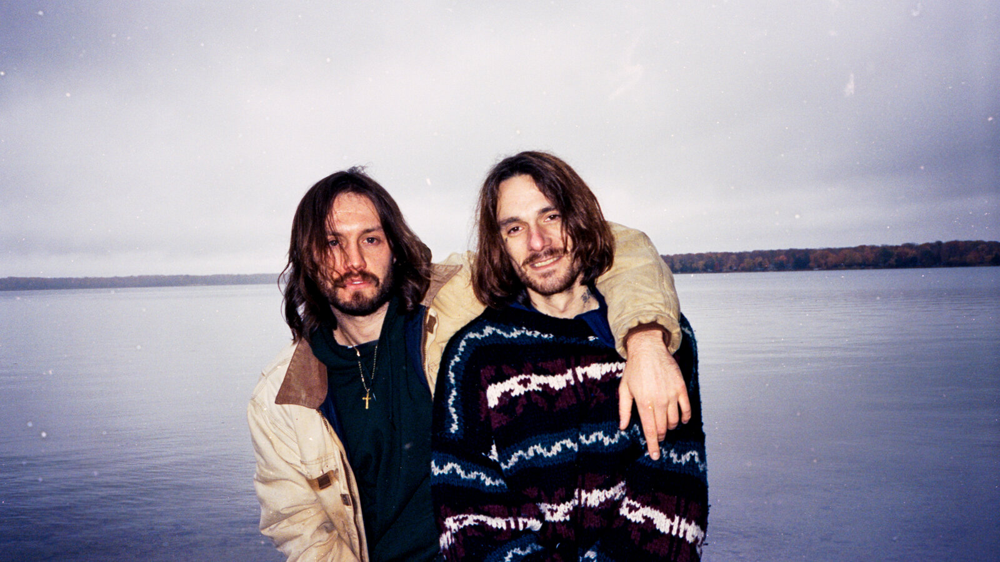

Aphex Twin
Aphex Twin (настоящее имя — Ричард Дэвид Джеймс) — композитор, диджей и музыкальный продюсер, специализирующийся на жанрах техно, эмбиент, эйсид, драм-н-бейс, Intelligent Dance Music

Crystal Castles
Канадская группа, исполняющая экспериментальную электронную музыку. Проект основан Итаном Кэтом и Элис Гласс в 2003 году в Торонто. Сейчас коллектив состоит из Итана Кэта и Эдит Фрэнсис

Salem
Американская группа электронной музыки из Траверс-Сити, штат Мичиган. Она была основана Хизер Марлатт, Джеком Донохью и Джоном Холландом. Салем считается одним из пионеров жанра witch house. Салем выпустил свой дебютный альбом King Night в 2010 году.